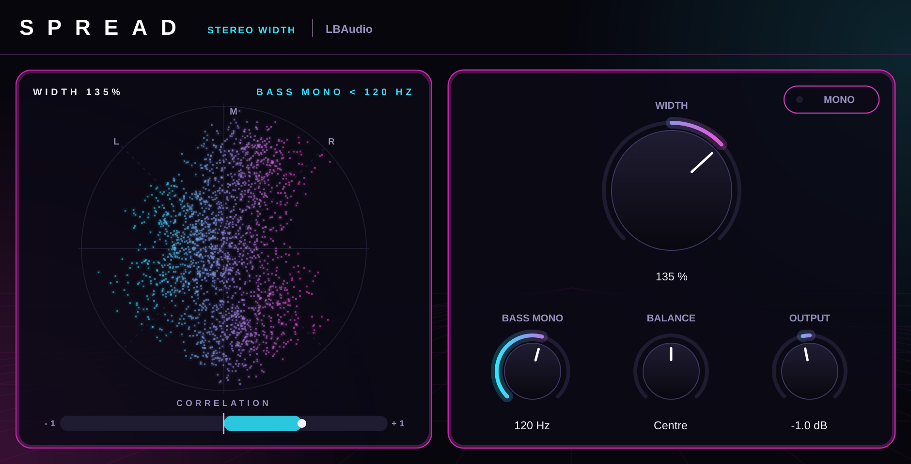

Stereo width plugin · VST3 & AU
Spreadby LBAudio
Make a mix wider or narrower without losing the low end or the mono fold-down, and watch the stereo image on a live vectorscope.
Instant download. Any local VAT is worked out at checkout. Or get the FX 5 in one bundle.
- VST3
- AU
- Windows
- macOS
- Linux
- Zero latency

Hear it on a real track
Part of an LBAudio track, run through Spread at three settings. Each version is matched to the original's loudness. Best on headphones: listen to the sides of the mix, while the bass stays put in the middle.
A wider top with everything under 120 Hz kept in the centre, so the low end stays solid.
Watch it work
The real plugin on screen, on one of our tracks. Every before-and-after is matched in loudness, so you hear what Spread does, not a change in volume.
Width you can check
The vectorscope shows where your sound sits, from the centre out to the edges, and the correlation meter warns you before a wide mix falls apart in mono.
Mono bass
Bass Mono keeps everything under the frequency you pick in the centre, so kicks and bass stay solid on club systems and phone speakers.
Mono-safe
Spread only changes the sides of the mix, not the middle, so your track keeps its balance when it's played in mono.
One-click mono check
The Mono button folds the output to mono, so you can hear your mix the way a single speaker plays it.
The controls
Five controls. Double-click any knob to reset it, or click a value and type one in.
| Control | Range | What it does |
|---|---|---|
| Width | 0 to 200 % | 100 % leaves the stereo image as it is. Lower narrows it, down to mono at 0 %. Higher pushes it wider. |
| Bass mono | Off to 500 Hz | Everything below this frequency is kept in the centre, with a steep 24 dB/oct filter. |
| Balance | L 100 to R 100 | Moves the whole image to the left or right. |
| Output | ±12 dB | Level after everything else. |
| Mono | On / off | Folds the output to mono so you can check your mix. |
Where to start
Four starting points. Set these, then adjust by ear.
-
Wider mix bus
Width 115–130 % · bass mono 100–120 Hz
A subtle lift in width with a rock-solid low end.
-
Huge synth pad
Width 150–180 % · bass mono 150 Hz
Pushes pads out to the sides and leaves the centre clear for the vocal.
-
Tidy a stereo bass
Width 100 % · bass mono 150–200 Hz
Keeps a wide bass patch wide on top while its low end stays in the middle.
-
Narrow the verse
Width 50–70 %
Automate the verse narrower, so the chorus feels wider when it hits.
Specs
One download for each system. No iLok, no account and no activation.
- Formats
- VST3 on Windows, macOS and Linux. Audio Unit (AU) on macOS.
- Windows
- Windows 10 or later, 64-bit.
- macOS
- macOS 10.13 or later. Runs natively on Apple Silicon and Intel.
- Linux
- 64-bit x86 (x86-64).
- Hosts
- Any DAW that loads VST3 or AU plugins, such as Ableton Live, FL Studio, Cubase, Reaper, Studio One, Bitwig and Logic Pro. Not available for Pro Tools (AAX).
- Latency
- None: zero samples.
- Width
- 0 to 200 %, with bass mono from 20 to 500 Hz.
- Metering
- Vectorscope and correlation meter.
- Channels
- Stereo (width needs two sides).
Questions
Anything else? Email support@lbaudio.co.uk.
How do I install it?
Unzip the download and copy Spread.vst3 into your VST3 folder: C:\Program Files\Common Files\VST3 on Windows or ~/Library/Audio/Plug-Ins/VST3 on a Mac. Logic users also copy Spread.component into ~/Library/Audio/Plug-Ins/Components. Then rescan plugins in your DAW. The zip includes these steps in INSTALL.txt.
How many computers can I use it on?
All the computers you personally own or use. See the licence agreement for the details.
Can I use it on commercial releases?
Yes. The music you make with Spread is entirely yours, with no royalties or credits owed.
Do updates cost anything?
No. Updates to Spread version 1 are free for everyone who bought it.
What if it doesn't work on my system?
Get in touch within 14 days of buying. If we can't get it working, you get a full refund. See the refund policy.
Does it work in Pro Tools?
Not yet. Pro Tools only loads AAX plugins, and Spread is VST3 and AU.
Will a wider mix sound bad in mono?
No. Spread only changes the sides of the mix, which cancel out when it's played in mono, so the mono version stays the same. Press Mono to hear it for yourself.
Spread
VST3 & AU for Windows, macOS and Linux. Instant download. Or get the FX 5 in one bundle.